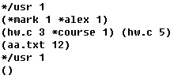
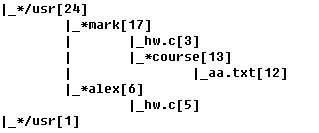
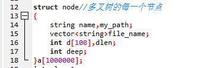
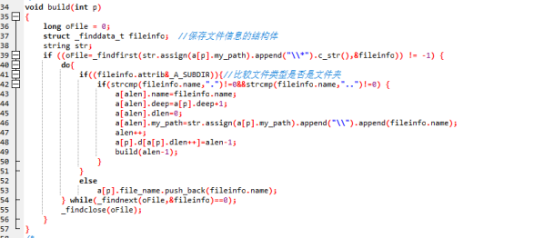
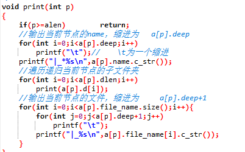
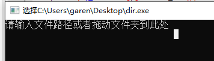
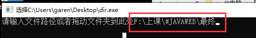
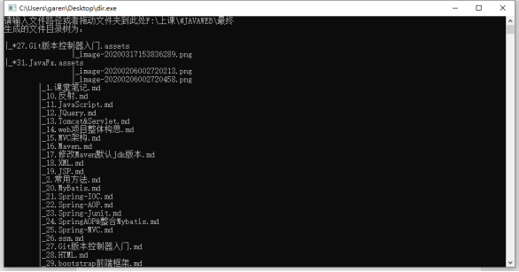

武汉东湖学院
2020—2021年度
第一学期考试（
B
）卷
考试科目：数据结构课程设计
考试形式：
开卷、考查
课程类别：
必修
一、考试内容
给出Unix下目录和文件信息，借助树的遍历思想及实现方法，要求编程实现将其排列成一棵有一定缩进的树。例如输入：

则输出：

二、具体要求
1.
完成程序所要实现的功能，得到正确的运行结果。
2.
做好程序的功能测试，测试正确输入到和不正确输入两种情况，程序均能得到正确结果。
3.
严格按照课程设计报告的步骤和内容要求撰写报告，做到有文字描述，有图表说明。
4.
严格按照课程设计报告的格式要求调整报告格式，包括字体、字体大小等。
三、实现过程
1.
为了满足题目要求，先设计一个结构体
Node代表一个文件节点
struct
node
{
string
name,my_path;
vector<string>file_name;
int
d[100],dlen;
int
deep;
}a[1000000];

2.
利用递归算法，遍历每一个文件，如果是文件夹，则继续往下找
但是在单次递归中，只考虑当前文件夹即可，将路径和名字保存到一个新的节点中
long
oFile = 0;
struct
_finddata_t fileinfo; //保存文件信息的结构体
string
str;
if
((oFile=_findfirst(str.assign(a[p].my_path).append("\\*").c_str(),&fileinfo)) != -1) {
do{
if((fileinfo.attrib&_A_SUBDIR)){//比较文件类型是否是文件夹
if(strcmp(fileinfo.name,".")!=0&&strcmp(fileinfo.name,"..")!=0)
{
a[alen].name=fileinfo.name;
a[alen].deep=a[p].deep+1;
a[alen].dlen=0;
a[alen].my_path=str.assign(a[p].my_path).append("\\").append(fileinfo.name);
alen++;
a[p].d[a[p].dlen++]=alen-1;
build(alen-1);
}
}
else
a[p].file_name.push_back(fileinfo.name);
}
while(_findnext(oFile,&fileinfo)==0);
_findclose(oFile);
}

3. 递归函数参数为当前节点的下标。对于每一次递归，先输出当前节点的名字，deep为缩进数；之后遍历递归当前节点的子文件夹，当所有子文件夹都遍历完，输出当前节点下的文件名
if(p>=alen)
return;
//输出当前节点的
name
，缩进为
a[p].deep
for(int
i=0;i<a[p].deep;i++)
printf("\t");//
\t为一个缩进
printf("|_*%s\n",a[p].name.c_str());
//遍历递归当前节点的子文件夹
for(int
i=0;i<a[p].dlen;i++)
print(a[p].d[i]);
//输出当前节点的文件，缩进为
a[p].deep+1
for(int
i=0;i<a[p].file_name.size();i++){
for(int
j=0;j<a[p].deep+1;j++)
printf("\t");
printf("|_%s\n",a[p].file_name[i].c_str());
}

主函数main设计：
int
main()
{
while(1){
string
str;
bool
flag=false;
system("CLS");
printf("请输入文件路径或者拖动文件夹到此处
");
getline(cin,str);
if(_access(str.c_str(),0)!=-1){
a[0].name=a[0].my_path=str;
a[0].deep=0;
flag=true;
}
if(flag){
build(0);
printf("生成的文件目录树为：
\n\n");
print(0);
}
else
printf("输入路径不存在或路径指向不为文件目录结构
\n");
printf("\n\n输入任意字符继续下一次生成文件目录结构
\n");
system("pause");
}
return
0;
}
四、软件测试
开始：

输入路径：

按回车：

五、实验总结
在这次课程设计中，虽然说是数据结构，但是运用到了许多c语言文件
io
的知识，也总结了许多。必须包含头文件
<fstream.h>
。这是
<iostream.h>
的一个扩展集
,
提供有缓冲的文件输入输出操作
.
事实上
, <iostream.h>
已经被
<fstream.h>
包含了。
重要参数：
pathname
:文件名或者路径名。
flags:文件打开方式。
mode:文件存取权限。
一个文件有多个文件打开方式，这些flag参数可以通过”
|
”操作组合在一起，下面列出几个常见的
flag
参数
:
O_RDONLY,O_WRONLY,O_RDWR,这三个参数不能相互组合。
O_RDONLY：表示以只读方式打开文件，类似于标准
I/O
中的”
r
”权限。
O_WRONLY：表示以只写方式打开文件，类似于标准
I/O
中的”
w
”权限。
O_RDWR：表示以读写方式打开文件，类似于标准
I/O
中的”
r+
”权限。
O_CREAT：表示如果打开文件不存在，就创建一个新文件。
O_EXCL：表示如果使用
O_CREAT
时目标文件存在，则返回错误信息。可以用于测试目标文件是否存在。
O_TRUNC：表示使用
O_CREAT
时文件已存在，清空文件中所有数据，并且在设置文件大小为
1
。
O_APPEND：表示使用
O_CREAT
时文件已存在，把要写入的数据添加进文尾
(
文件读写位置自动指向文尾
)
。